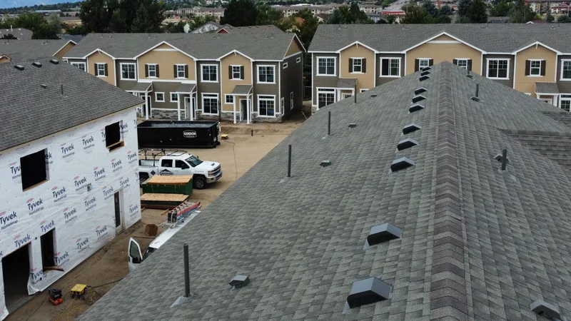

Start with the part of the house you can't change. On a lot of homes around here that's brick or stone, and the roof, the siding and the trim all have to get along with it.
Find the undertone first
Every color leans warm or cool. Warm colors carry some red or brown in them: tan, cream, red brick, a brown shingle blend. Cool colors lean blue or gray, like charcoal, slate, a blue-gray siding or a bright white.
Trouble starts when the two fight. A cool gray shingle over orange-red brick can make the brick look muddy and the roof look cold. A warm brown roof on a crisp blue-gray house can look a little dirty. Neither color is wrong on its own. Together they argue.

Most shingle colors are blends of several granule colors, so look closely at a sample. A shingle sold as gray might carry flecks of brown that make it work with tan brick, or flecks of blue that won't.
Contrast or blend?
There are two ways to make it work, and both are fine.
Blending means everything sits in the same color family: a weathered-wood shingle, tan siding, cream trim. It's calm and hard to get badly wrong. It can also look flat if every piece is the same strength, so most blended houses still carry a roof a shade or two darker than the walls.
Contrast means a dark roof over light walls, or the reverse. A charcoal roof on a white farmhouse is the classic example. Contrast makes a house look sharper from the street and shows off the lines of the roof. It also shows mistakes, so the undertones need to agree.
My opinion: on a two-story house with a lot of roof showing, keep the roof darker than the siding. A light roof over dark siding can make a tall house look top-heavy.

Where trim fits in
Trim is the frame around the picture. It's the window trim, fascia, soffits and corner boards, plus the gutters and downspouts if you count them, and it gets less thought than it should.
- White trim is the safe pick and works with almost any roof.
- Trim that matches the roof color pulls the house together, especially under dark shingles.
- Gutters usually look best matching the trim. If a downspout runs down the middle of a wall, matching the siding hides it.
- The front door and shutters are where you can take a chance, since they're cheap to change later.
Light or dark, and the heat
A dark roof soaks up more sun, and in an East Tennessee summer that can mean a warmer attic. Good attic ventilation does a lot of the work of keeping that in check. Light roofs can show algae streaks sooner on shady, damp slopes. Light or dark shingles in a Tennessee summer goes through that trade in more detail.

Check with the HOA before you fall in love
If your neighborhood has an HOA, get its list of allowed roof and siding colors in writing before you pick anything. Some boards want a form and a sample before they'll say yes, and some take a while to answer. A color you love isn't worth a letter from the board.
Judge it on your house, not a screen
A color on your phone and the same color on your house in Tennessee sun can look like two different things. A few ways to see the real one:
- Get full-size shingle samples or a sample board, and hold them against your brick or siding outside.
- Look in the morning and again late in the afternoon. The same gray can read blue at noon and brown near sunset.
- Step back to the street. That's where your neighbors see the house, and a color that looked bold in your hand can disappear at that distance.
- Drive past a finished house with the shingle you're considering. Ask your roofer for the line and the color name, then look for it around town.
- Put the trim and siding samples next to the shingle at the same time, not one after another.
You can ask us to bring samples of the shingles and siding we carry so you can do exactly this on your own wall. For pairings by house style, picking a shingle color for your house style has examples for a brick ranch and a white farmhouse, among others.
Siding changes the math
If you're replacing the siding along with the roof, you get to choose both together, which is a good spot to be in. If you're only doing the roof, the siding is fixed and the roof has to work around it. Our siding page covers what we put up, and pricing roof and siding at the same time lets you see the whole house at once.